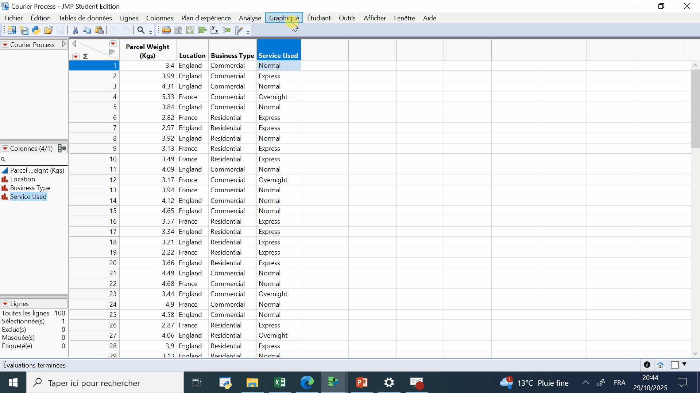
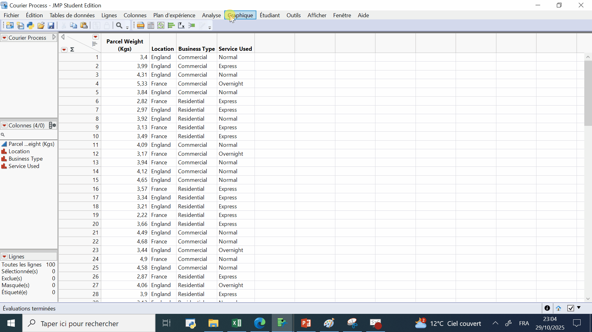
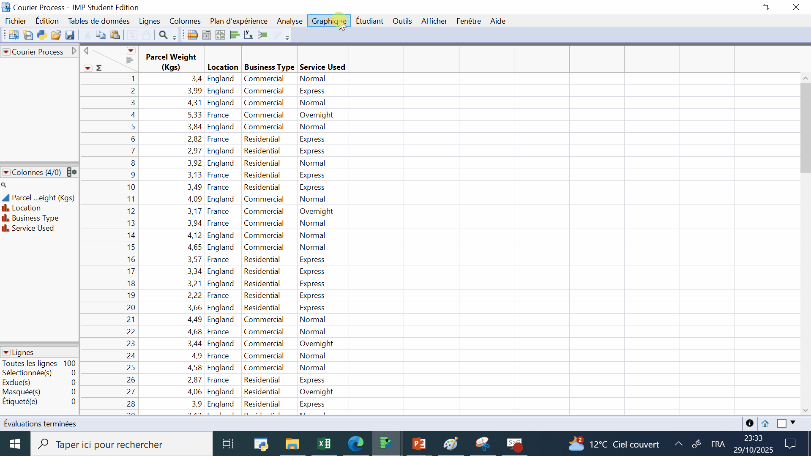

Procédure 18 · Graphiques
Boîtes à moustaches
Procédure pas à pas
- Ouvrir Graphique → Constructeur de graphiques.
- Choisir l’élément Boîte à moustaches.
- Déposer la mesure continue sur Y et la catégorie sur X.
- Pour une stratification à deux facteurs, déposer deux variables sur X et vérifier leur ordre.
- Cliquer sur Terminer.
- Vérifier les effectifs de chaque groupe avant d’interpréter les quartiles.
Jeu de données / résultat
Fichier cité : Courier-Process.xls
Point de vigilance : Les seuils de 25 observations figurant dans le support sont des recommandations pédagogiques, pas une interdiction statistique absolue.
Démonstrations animées dans JMP
Animations extraites du PowerPoint « Lean Six Sigma avec JMP 003 ». Elles complètent les étapes numérotées ci-dessus.


